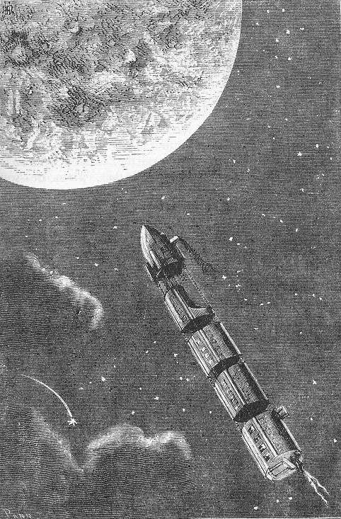
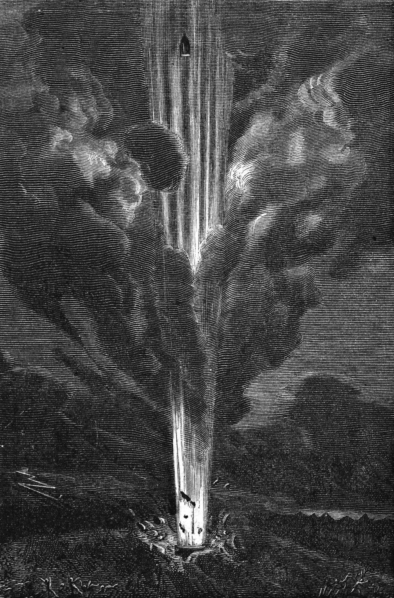
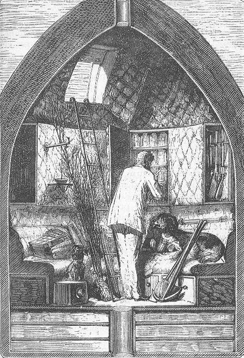
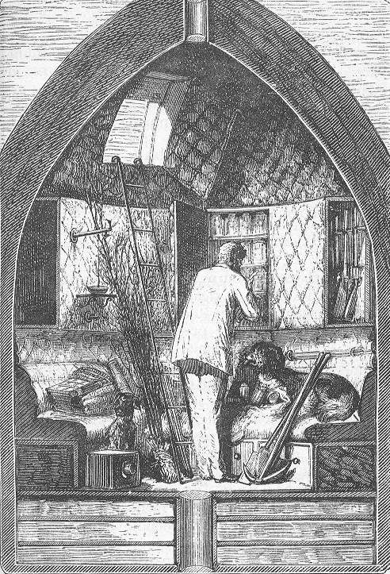
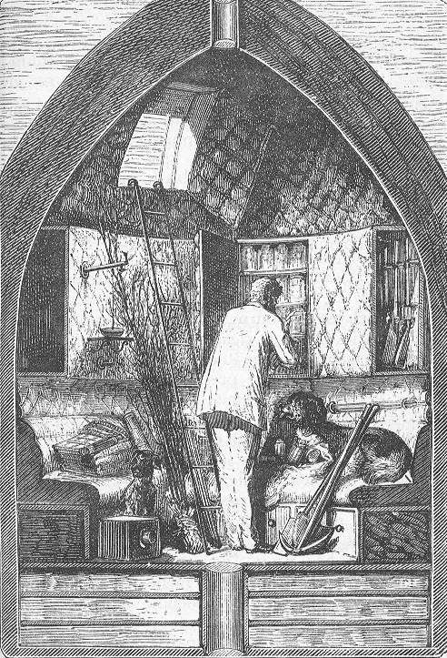

“The estimation in which these gentlemen were held, according to one of the most scientific exponents of the Gun Club,
was “proportional to the masses of their guns, and in the direct ratio of the square of the distances attained by their projectiles.”
Jules Verne’s 1865 novel From the Earth to the Moon: A Direct Route in 97 Hours, 20 Minutes tells the story of the Baltimore Gun Club
– an association of engineers and artillery enthusiasts united by their unparalleled obsession with weaponry. With the American Civil War
over and no cannons left to fire, the members grow restless; deprived of conflict, “they gave themselves up wholly to dreams of a
Platonic kind of artillery”.


^ The Gun Club's goal soon changes from shooting the moon, to a manned mission to visit the lunar world
The Plan
At the behest of the Club’s President, Impey Barbicane, a meeting is convened. He announces:
“Moreover, you are well aware that, in general terms, the resisting power of cannon and the expansive force
of gunpowder are practically unlimited.
I have looked at the question in all its bearings, I have resolutely attacked it, and by incontrovertible calculations
I find that a projectile endowed with an initial velocity of 12,000 yards per second, and aimed at the moon, must necessarily reach it.
I have the honor, my brave colleagues, to propose a trial of this little experiment."
The proposal is simple in spirit and absurd in scale: build a cannon large enough – and powerful enough – to strike the moon.
What follows is a tale of unrestrained masculinity and industrial ambition. The physics is deeply flawed, but the technical imagination is staggering.
This is a moon mission conceived in a pre-car era; Gun Club members ride on horseback while discussing escape velocities.
It is important to note: This is not initially a manned mission. The aim has nothing to do with exploration. It is ballistics.
The Observatory at Cambridge, Massachusetts, provides the necessary calculations:
“1st. The cannon ought to be planted in a country situated between 0° and 28° of N. or S. lat.
2nd. It ought to be pointed directly toward the zenith of the place.
3rd. The projectile ought to be propelled with an initial velocity of 12,000 yards per second.
4th. It ought to be discharged at 10hrs. 46m. 40sec. of the 1st of December of the ensuing year.
5th. It will meet the moon four days after its discharge, precisely at midnight on the 4th of December, at the moment of its transit across the zenith.”
They have just over a year to prepare. Miss the window, and the next viable opportunity will not occur for eighteen years.
A projectile 108 inches in diameter is selected – large enough to be observed from Earth. What remains is engineering and the
question of technical capacity.
“The problem before us is how to communicate an initial force of 12,000 yards per second to a shell of 108 inches in diameter,
weighing 20,000 pounds”
Barbicane settles – through a mixture of calculation, hard science, and dubious heuristic – on a 900-foot cannon,
charged with 400,000 pounds of fulminating cotton.
After a brief but violent dispute between the Texans and the Floridians over who could host the cannon, Tampa is chosen as the launch site.

^ The projectile is manufactured by contractors in Coldspring, near New York, and is then transported by train to Tampa
Casting the Cannon
Verne devotes extraordinary attention to the casting of the cannon. He turns metallurgy into a literary spectacle. And indeed,
in this period, such scale would have been unprecedented.
“During the eight months which were employed in the work of excavation the preparatory works of the casting
had been carried on simultaneously with extreme rapidity. A stranger arriving at Stones Hill would have been
surprised at the spectacle offered to his view.
At 600 yards from the well, and circularly arranged around it as a central point, rose 1,200 reverberating ovens,
each six feet in diameter, and separated from each other by an interval of three feet. The circumference occupied
by these 1,200 ovens presented a length of two miles. Being all constructed on the same plan, each with its high quadrangular chimney,
they produced a most singular effect.
It will be remembered that on their third meeting the committee had decided to use cast iron for the Columbiad, and in particular
the white description. This metal, in fact, is the most tenacious, the most ductile, and the most malleable, and consequently suitable for
all moulding operations; and when smelted with pit coal, is of superior quality for all engineering works requiring great resisting power,
such as cannon, steam boilers, hydraulic presses, and the like.
Cast iron, however, if subjected to only one single fusion, is rarely sufficiently homogeneous; and it requires a second fusion completely to
refine it by dispossessing it of its last earthly deposits. So long before being forwarded to Tampa Town, the iron ore, molten in the great
furnaces of Coldspring, and brought into contact with coal and silicium heated to a high temperature, was carburized and transformed into cast
iron. After this first operation, the metal was sent on to Stones Hill. They had, however, to deal with 136,000,000 pounds of iron, a quantity
far too costly to send by railway. The cost of transport would have been double that of material. It appeared preferable to freight vessels
at New York, and to load them with the iron in bars. This, however, required not less than sixty- eight vessels of 1,000 tons, a veritable
fleet, which, quitting New York on the 3rd of May, on the 10th of the same month ascended the Bay of Espiritu Santo, and discharged their
cargoes, without dues, in the port at Tampa Town. Thence the iron was transported by rail to Stones Hill, and about the middle of January
this enormous mass of metal was delivered at its destination.
It will easily be understood that 1,200 furnaces were not too many to melt simultaneously these 60,000 tons of iron. Each of these furnaces
contained nearly 140,000 pounds weight of metal. They were all built after the model of those which served for the casting of the Rodman gun;
they were trapezoidal in shape, with a high elliptical arch. These furnaces, constructed of fireproof brick, were especially adapted for
burning pit coal, with a flat bottom upon which the iron bars were laid. This bottom, inclined at an angle of 25 degrees, allowed the metal
to flow into the receiving troughs; and the 1,200 converging trenches carried the molten metal down to the central well.”
The completed cannon is christened the Columbiad – both an homage to an earlier cannon, and to Columbus himself.
It is symbolic of mankind’s capacity to push boundaries.
Michel Ardan
Just as the construction concludes, a telegram arrives:
“FRANCE, PARIS,
30 September, 4 A.M
Barbicane, Tampa Town, Florida, United States.
Substitute for your spherical shell a cylindro-conical projectile. I shall go inside. Shall arrive by steamer Atlanta.
MICHEL ARDAN”
With that, the focus then shifts from mere projectile to spacecraft.
Michel Ardan – flamboyant, idealistic and utterly fearless – proposes to travel inside the shell. Public excitement erupts.
One dissenter challenges the feasibility of the mission and demands to know how Ardan intends to return. He calmly replies
that he does not intend to do so.
^ It is the valiant – but completely mad – Frenchman, Michel Ardan who proposes visiting the moon
Rivalry
The opponent is revealed to be Captain Nicholl, long-time rival of Barbicane – an armour specialist who has spent his career
designing shields to counter the Gun Club’s artillery. He is the sole American opponent to the Gun Club’s lunar ambitions.
Their professional antagonism escalates to the challenge of a duel. Riding at dawn, only the intervention of Michel Ardan and
J.T. Maston, the Gun Club’s secretary, prevent disaster.
In a final gesture of reconciliation, Ardan invites these mortal enemies to join him inside the capsule.
Launch
The Columbiad is loaded. The clock strikes 10hrs. 46m. 40sec on the 1st of December. The Columbiad fires!
Due to a storm, astronomers on Earth are unable to monitor the mission. After a week shrouded in the unknown, astronomers finally
discover that the astronauts have missed the moon.
Instead, captured by lunar gravity, the travellers are carried into orbit – setting the stage for Verne’s sequel, Around the Moon.
References
Verne, Jules. From the Earth to the Moon. 1865.
Images: de Montaut, Henry, illustrations from the book, public domain.
 
